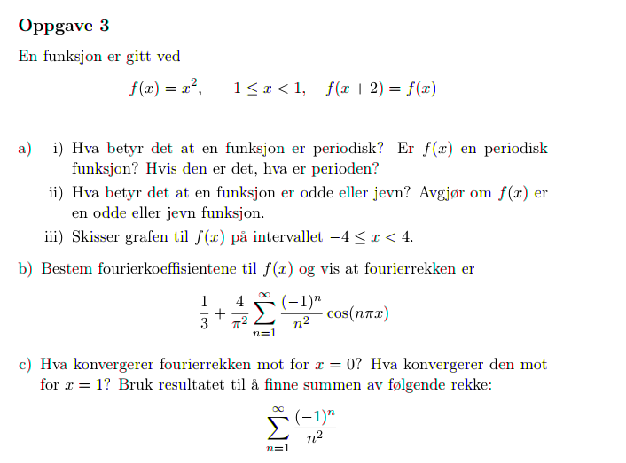
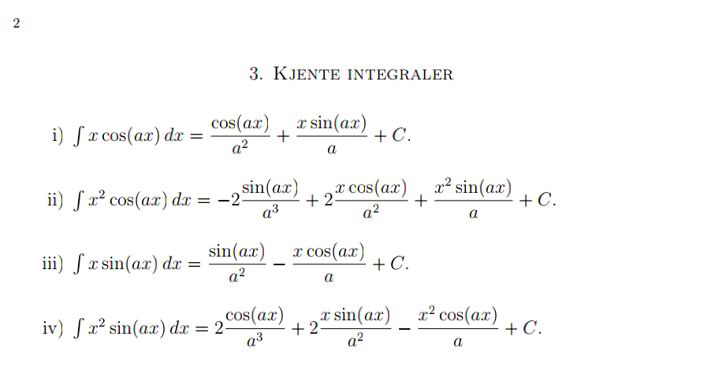
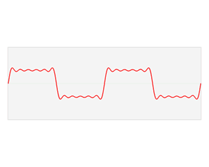

MAT106 for ELK og KOM
Uke 7
24.02.2016
Alexander Lundervold
institutt for data- og realfag
På mobil? Swipe
Forrige uke
Fourierrekker
Denne uken
Fortsetter med fourierrekker
- Hva med ikke-periodiske funksjoner?
- Tilnærming med fourierrekker
- Smakebit på anvendelser
Fourierrekker
Fra sist uke:
Dersom en $2L$-periodisk funksjon kan skrives som en trigonometrisk rekke:
\[f(x) = a_0 + \sum_{n=1}^{\infty} a_n \cos \left(\frac{n\pi x}{L}\right) + b_n \sin \left(\frac{n\pi x}{L}\right)\]
så må:
\[\begin{align}
a_0 &= \frac{1}{2L} \int_{-L}^L f(x) \mbox{dx}\\ \\
a_n &= \frac{1}{L} \int_{-L}^L f(x) \cos \left(\frac{n\pi x}{L}\right) \mbox{dx}\\ \\
b_n &= \frac{1}{L} \int_{-L}^L f(x)\sin \left(\frac{n\pi x}{L}\right) \mbox{dx}
\end{align}\]
Merk: Fourierrekken er altså unik blant trigonometriske rekker som konvergerer til $f$
\[f(x) = a_0 + \sum_{n=1}^{\infty} a_n \cos \left(\frac{n\pi x}{L}\right) + b_n \sin \left(\frac{n\pi x}{L}\right)\]
?
Eksamen i MAT106, våren 2015
Fra formelark
 Kan tilnærme funksjoner ved å kutte fourierrekker:
\[f(x) \approx a_0 + \sum_{n=1}^{{\color{blue}N}} a_n \cos \left(\frac{n\pi x}{L}\right) + b_n \sin \left(\frac{n\pi x}{L}\right),\]
der $a_0$, $a_n$ og $b_n$ er fourierkoeffisientene
hva kan vi si om feilen?
Fourierkoeffisienten gir den beste tilnærmingen til $f$ med trigonometrisk polynom av grad $N$
Hva betyr "best"?
Den kvadratiske avstanden
\[E = \int_{-L}^L |f(x) - P(x)|^2 \mbox{dx}\]
er minst blant alle trigonometriske polynom $P$ av grad $N$
Hvorfor bruke fourier istedenfor taylor?

Taylor gir en lokal tilnærming. Fourier er global.
I tillegg: taylor krever at $f$ er uendelig deriverbar
Hvorfor lære om fourierrekker?
Først,
Hva er fourierrekker, egentlig?
Signalet blir delt opp i frekvenskomponenter

Hva så?
- Ny representasjon av signaler
- Brukes mye i signalbehandling!
- Løsning av partielle differensiallikninger (Fouriers motivasjon)
- Mye mer! Eksempel: MRI
{kind=link}
Støyfjerning
Et signal: \[f(t) = 3\cos t + \sin t + 0.4\sin(30t)\]
Fjerner høyfrekvente svingninger:
\[\tilde{f}(t) = 3\cos t + \sin t\]
Komprimering
IDÉ:
sett alle "uviktige"/"små" koeffisienter lik $0$